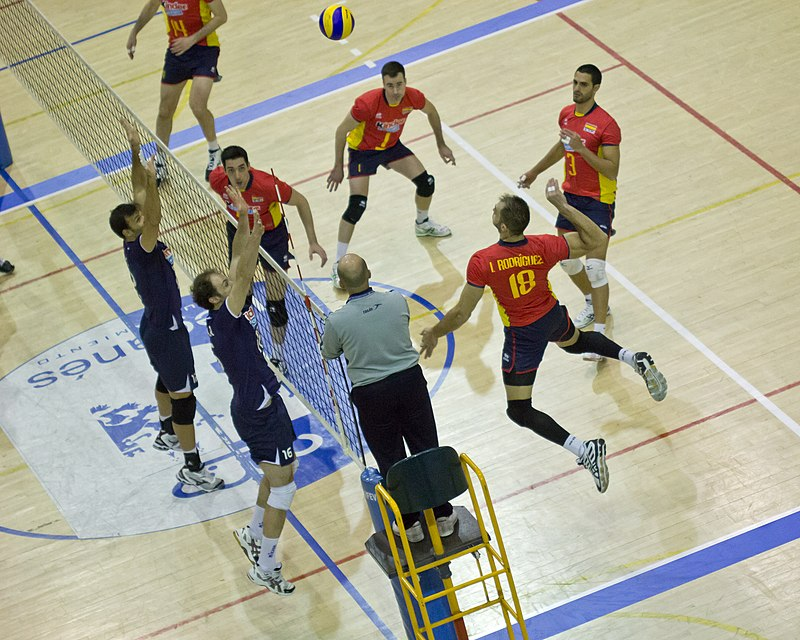

WELCOME TO MY FIRST WEBSITE
SKILLS.
SERVE

|
- A player stands behind the inline and serves the ball, in an attempt to drive it into the opponent's court. The main objective is to make it land inside the court; it is also desirable to set the ball's direction, speed and acceleration so that it becomes difficult for the receiver to handle it properly.[3] A serve is called an "ace" when the ball lands directly onto the court or travels outside the court after being touched by an opponent; when the only player on the server's team to touch the ball is the server.[clarification needed]
In contemporary volleyball, many types of serves are employed:
Underhand: a serve in which the player strikes the ball below the waist instead of tossing it up and striking it with an overhand throwing motion. Underhand serves are considered very easy to receive and are rarely employed in high-level competitions.[32]
Sky ball serve: a specific type of underhand serve occasionally used in beach volleyball, where the ball is hit so high it comes down almost in a straight line. This serve was invented and employed almost exclusively by the Brazilian team in the early 1980s and is now considered outdated. During the 2016 Olympic Games in Rio de Janeiro, however, the sky ball serve was extensively played by Italian beach volleyball player Adrian Carambula. In Brazil, this serve is called Jornada nas Estrelas (Star Trek).[33]
Topspin: an overhand serve where the player tosses the ball high and hits it with a wrist snap, giving it topspin which causes it to drop faster than it would otherwise and helps maintain a straight flight path. Topspin serves are generally hit hard and aimed at a specific returner or part of the court. Standing topspin serves are rarely used above the high school level of play.[32]
Float: an overhand serve where the ball is hit with no spin so that its path becomes unpredictable, akin to a knuckleball in baseball.[32]
Jump serve: an overhand serve where the ball is first tossed high in the air, then the player makes a timed approach and jumps to make contact with the ball, hitting it with much pace and topspin. This is the most popular serve among college and professional teams.[32]
Jump float: an overhand serve where the ball is tossed high enough that the player may jump before hitting it similarly to a standing float serve. The ball is tossed lower than a topspin jump serve, but contact is still made while in the air. This serve is becoming more popular among college and professional players because it has a certain unpredictability in its flight pattern.[32]
PASS
|
- Also called reception, the pass is the attempt by a team to properly handle the opponent's serve or any form of attack. Proper handling includes not only preventing the ball from touching the court but also making it reach the position where the setter is standing quickly and precisely.[3]
The skill of passing involves fundamentally two specific techniques: underarm pass, or bump, where the ball touches the inside part of the joined forearms or platform, at waistline; and overhand pass, where it is handled with the fingertips, like a set, above the head.[3] Either are acceptable in professional and beach volleyball; however, there are much tighter regulations on the overhand pass in beach volleyball. When a player passes a ball to their setter, it's ideal that the ball does not have a lot of spin to make it easier for the setter.
SET

|
- The set is usually the second contact that a team makes with the ball.[3] The main goal of setting is to put the ball in the air in such a way that it can be driven by an attack into the opponent's court.[3] The setter coordinates the offensive movements of a team, and is the player who ultimately decides which player will actually attack the ball.
As with passing, one may distinguish between an overhand and a bump set. Since the former allows for more control over the speed and direction of the ball, the bump is used only when the ball is so low it cannot be properly handled with fingertips, or in beach volleyball where rules regulating overhand setting are more stringent. In the case of a set, one also speaks of a front or back set, meaning whether the ball is passed in the direction the setter is facing or behind the setter. There is also a jump set that is used when the ball is too close to the net. In this case, the setter usually jumps off their right foot straight up to avoid going into the net. The setter usually stands about ⅔ of the way from the left to the right of the net and faces the left (the larger portion of net that the setter can see).
Sometimes a setter refrains from raising the ball for a teammate to perform an attack and tries to play it directly onto the opponent's court. This movement is called a "dump".[34] This can only be performed when the setter is in the front row, otherwise it constitutes an illegal back court attack. The most common dumps are to 'throw' the ball behind the setter or in front of the setter to zones 2 and 4. More experienced setters toss the ball into the deep corners or spike the ball on the second hit.
As with a set or an overhand pass, the setter/passer must be careful to touch the ball with both hands at the same time.[3] If one hand is noticeably late to touch the ball this could result in a less effective set, as well as the referee calling a 'double hit' and giving the point to the opposing team.
ATTACK

|
- The attack, also known as the spike, is usually the third contact a team makes with the ball.[3] The object of attacking is to handle the ball so that it lands on the opponent's court and cannot be defended.[3] A player makes a series of steps (the "approach"), jumps, and swings at the ball.
Ideally, the contact with the ball is made at the apex of the hitter's jump. At the moment of contact, the hitter's arm is fully extended above their head and slightly forward, making the highest possible contact while maintaining the ability to deliver a powerful hit. The hitter uses arm swing, wrist snap, and a rapid forward contraction of the entire body to drive the ball.[3] A 'bounce' is a slang term for a very hard/loud spike that follows an almost straight trajectory steeply downward into the opponent's court and bounces very high into the air. A "kill" is the slang term for an attack that is not returned by the other team thus resulting in a point.
Contemporary volleyball comprises a number of attacking techniques:[35]
Backcourt (or back row): an attack performed by a back-row player. The player must jump from behind the 3-meter line before making contact with the ball, but may land in front of the 3-meter line. A Pipe Attack is when the center player in the back row attacks the ball.
Line and Cross-court Shot: refers to whether the ball flies in a straight trajectory parallel to the sidelines, or crosses through the court in an angle. A cross-court shot with a very pronounced angle, resulting in the ball landing near the 3-meter line, is called a cut shot.
Dip/Dink/Tip/Cheat/Dump: the player does not try to make a hit, but touches the ball lightly, so that it lands on an area of the opponent's court that is not being covered by the defence.
Tool/Wipe/Block-abuse: the player does not try to make a hard spike, but hits the ball so that it touches the opponent's block and then bounces off-court.
Off-speed hit: the player does not hit the ball hard, reducing its speed and thus confusing the opponent's defence.
Quick hit/"One": an attack (usually by the middle blocker) where the approach and jump begin before the setter contacts the ball. The set (called a "quick set") is placed only slightly above the net and the ball is struck by the hitter almost immediately after leaving the setter's hands. Quick attacks are often effective because they isolate the middle blocker to be the only blocker on the hit.
Slide: a variation of the quick hit that uses a low backset. The middle hitter steps around the setter and hits from behind him or her.
Double quick hit/"Stack"/"Tandem": a variation of quick hit where two hitters, one in front and one behind the setter or both in front of the setter, jump to perform a quick hit at the same time. It can be used to deceive opposite blockers and free a fourth hitter attacking from back-court, maybe without block at all.
BLOCK
|
- Blocking refers to the actions taken by players standing at the net to stop or alter an opponent's attack.[3]
A block that is aimed at completely stopping an attack, thus making the ball remain in the opponent's court, is called offensive. A well-executed offensive block is performed by jumping and reaching to penetrate with one's arms and hands over the net and into the opponent's area.[3] It requires anticipating the direction the ball will go once the attack takes place.[3] It may also require calculating the best footwork to executing the "perfect" block.
The jump should be timed so as to intercept the ball's trajectory prior to it crossing over the plane of the net. Palms are held deflected downward roughly 45–60 degrees toward the interior of the opponents' court. A "roof" is a spectacular offensive block that redirects the power and speed of the attack straight down to the attacker's floor as if the attacker hit the ball into the underside of a peaked house roof.
By contrast, it is called a defensive, or "soft" block if the goal is to control and deflect the hard-driven ball up so that it slows down and becomes easier to defend. A well-executed soft-block is performed by jumping and placing one's hands above the net with no penetration into the opponent's court and with the palms up and fingers pointing backwards.
Blocking is also classified according to the number of players involved. Thus, one may speak of single (or solo), double, or triple block.[3]
Successful blocking does not always result in a "roof" and many times does not even touch the ball. While it is obvious that a block was a success when the attacker is roofed, a block that consistently forces the attacker away from their 'power' or preferred attack into a more easily controlled shot by the defence is also a highly successful block.
At the same time, the block position influences the positions where other defenders place themselves while opponent hitters are spiking.
DIG
|
- Digging is the ability to prevent the ball from touching one's court after a spike or attack, particularly a ball that is nearly touching the ground.[3] In many aspects, this skill is similar to passing, or bumping: overhand dig and bump are also used to distinguish between defensive actions taken with fingertips or with joined arms.[3] It varies from passing however in that is it a much more reflex based skill, especially at the higher levels. It is especially important while digging for players to stay on their toes; several players choose to employ a split step to make sure they're ready to move in any direction.
Some specific techniques are more common in digging than in passing. A player may sometimes perform a "dive", i.e., throw their body in the air with a forward movement in an attempt to save the ball, and land on their chest. When the player also slides their hand under a ball that is almost touching the court, this is called a "pancake". The pancake is frequently used in indoor volleyball, but rarely if ever in beach volleyball because the uneven and yielding nature of the sand court limits the chances that the ball will make good, clean contact with the hand. When used correctly, it is one of the more spectacular defensive volleyball plays.
Sometimes a player may also be forced to drop their body quickly to the floor to save the ball. In this situation, the player makes use of a specific rolling technique to minimize the chances of injuries.